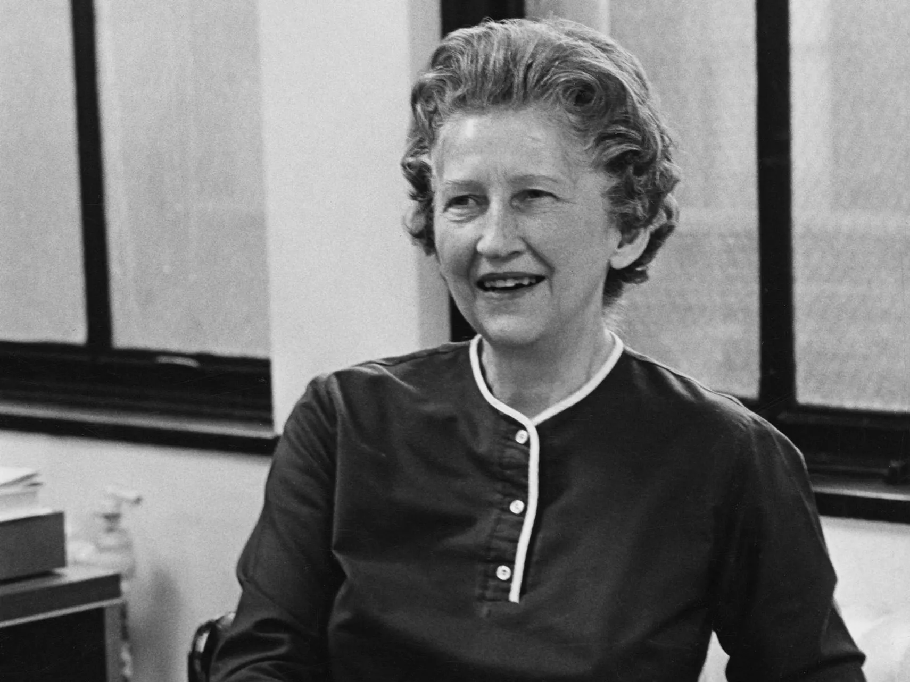
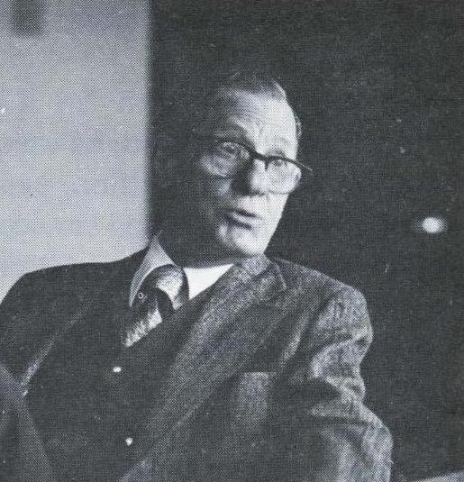
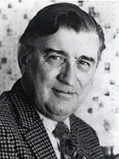
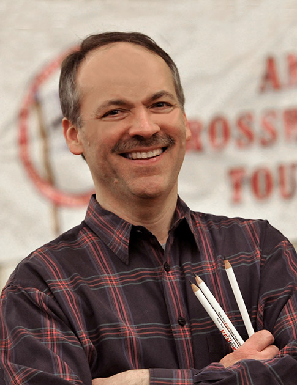

HISTORY
01
The New York Times’ Late Start with Crosswords
Although crosswords became popular in the early 1920s, The New York Times (which initially regarded crosswords as frivolous, calling them "a primitive form of mental exercise") did not begin to run a crossword until 1942, in its Sunday edition. The first puzzle ran on Sunday, February 15, 1942. The motivating impulse for the Times to finally run the puzzle (which took over 20 years even though its publisher, Arthur Hays Sulzberger, was a longtime crossword fan) appears to have been the bombing of Pearl Harbor; in a memo dated December 18, 1941, an editor conceded that the puzzle deserved space in the paper, considering what was happening elsewhere in the world and that readers might need something to occupy themselves during blackouts. The puzzle proved popular, and Sulzberger himself authored a Times puzzle before the year was out.
In 1950, the crossword became a daily feature. That first daily puzzle was published without an author line, and as of 2001 the identity of the author of the first weekday Times crossword remained unknown.
Notable Editors and Will Shortz’s Influence
There have been four editors of the puzzle: Margaret Farrar from the puzzle's inception until 1969; Will Weng, former head of the Times' metropolitan copy desk, until 1977; Eugene T. Maleska until his death in 1993; and the current editor, Will Shortz. In addition to editing the Times crosswords, Shortz founded and runs the annual American Crossword Puzzle Tournament as well as the World Puzzle Championship (where he remains captain of the US team), has published numerous books of crosswords, sudoku, and other puzzles, authors occasional variety puzzles (also known as "Second Sunday puzzles") to appear alongside the Sunday Times puzzle, and serves as "Puzzlemaster" on the NPR show "Weekend Edition Sunday".
MARGARET FARRAR
WILL WENG
EUGENE T. MALESKA
WILL SHORTZ
02
03
The Rise of the NYT Crossword’s Popularity
The puzzle's popularity grew over the years, until it came to be considered the most prestigious of the widely circulated U.S. crosswords. Many celebrities and public figures have publicly proclaimed their liking for the puzzle, including opera singer Beverly Sills, author Norman Mailer, baseball pitcher Mike Mussina, former President Bill Clinton, conductor Leonard Bernstein, TV host Jon Stewart, and music duo the Indigo Girls.
The Times puzzles have been collected in hundreds of books by various publishers, most notably Random House and St. Martin's Press, the current publisher of the series. In addition to appearing in the printed newspaper, the puzzles also appear online on the paper's website, where they require a separate subscription to access. In 2007, Majesco Entertainment released The New York Times Crosswords game, a video game adaptation for the Nintendo DS handheld. The game includes over 1,000 Times crosswords from all days of the week. Various other forms of merchandise featuring the puzzle have been created, including dedicated electronic crossword handhelds that just contain Times crosswords, and a variety of Times crossword-themed memorabilia, including cookie jars, baseballs, cufflinks, plates, coasters, and mousepads.